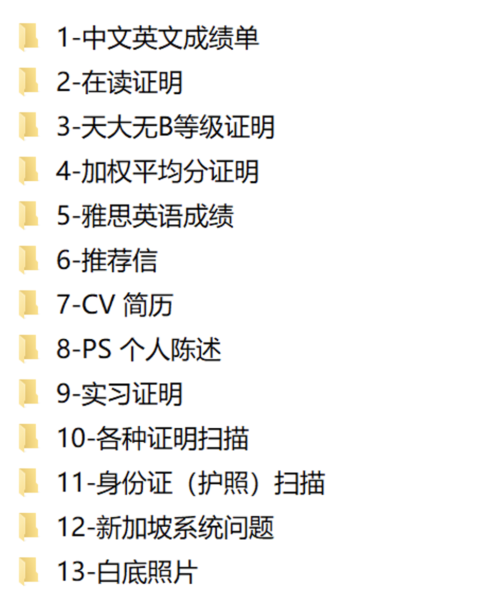

24Fall MScISE@NUS
申请结果（截至发出这篇帖子为止）
已拿到Offer
香港大学：建筑项目管理CPM；数字化资产管理DMBA；工业工程与物流管理IELM
新国立：工业系统工程ISE（获得15%学费减免的奖学金）
正在申请的项目
新国立：项目管理PM
目前去向：NUS的ISE
（其实还申请了香港科技大学一个专业，12月初港科给我打电话问我是否已经获得别的学校的Offer，我说已经拿到了HKU和NUS的，并放弃了港科的后续录取等工作）
（因为经管..太难申请PHD了，加上个人没有什么科研的实力和读博的意愿，所以申请的是授课性质的硕士）
个人背景介绍Background
专业：天津大学-管理与经济学部-工程管理-24fall；工程项目投融资（微专业）
加权：88.27/100；3.66/4.0；（专业40%）
语言成绩：IELTS 6.5（最低小分6）
无GRE或GMAT
项目经历：
- 一次天津市级大创，为团队的主要参与成员，参与模型搭建的过程。
- 一次互联网+比赛，取得天津市银奖，较为边缘的队员。
- 一次互联网+比赛，取得校级银奖，核心参与成员。
实习经历：
- 某央企的子公司，本专业相关，主要负责资产管理、合同审查等。
- 某知名的建筑、房地产等领域相关的专业律师事务所，主要负责案例检索库的搭建、撰写检索报告等。
- 某天津设计院，本专业相关，主要负责工程造价、投标书编写等。
其他经历：
- 一次支教，负责调研任务和撰写调研报告。
- 某校级社团的部长。
- 助农营销赛等。
CV、PS、推荐信全权委托了机构，机构写好初稿后自己跟着校对了很久。推荐老师一位是工管系主任，一位是大创的指导老师。
项目介绍与时间线梳理
-
HKU-CPM：该项目开放的申请时间为10月19日，个人提交申请材料的时间为10月30日，需要老师完成网推的流程，1月18日面试，2月1日获得推研信，2月23日拿到录取的Offer，留位费为1/2学费（需要在3月8日前递交），项目为一年制。面试复盘：面试时长大约15分钟，是一个有发音很纯正的大陆/香港的老爷爷。一共问了四个问题：为什么大学一毕业就选择在读研究生；毕业设计的主题和选择该主题的原因；CPM涉及三个小方向，会选择什么方向以及理由；反问环节并闲聊的几句。
-
HKU-DMBA：该项目开放的申请时间为10月20日，个人提交申请材料的时间为10月30日，需要老师完成网推的流程，1月22日面试，1月30日获得推研信，2月22日拿到录取的Offer，留位费为1/2学费（需要在3月7日前递交），项目为一年制。面试复盘：面试时长大约5分钟，是一个有一定口音的巴基斯坦老师，大约40岁的样子。一共问了三个问题：自我介绍+为什么选择这个专业；毕业设计的主题（第一下没有听清楚问题，所以让老师解释了一下）；反问环节。
-
HKU-IELM：该项目开放的申请时间为9月25日，个人提交申请材料的时间为10月15日，不需要老师网推，直接在官网提交材料即可。11月25日拿到Offer，留位费为1/2的学费（需要在12月8日前递交），项目为一年制。
- NUS-PM：该项目开放时间为10月1日，递交材料的时间为10月15日，直接在系统里提交CV，并回答两个系统问题即可，不需要网推，但是个人同时提交了个人陈述PS，项目为1-2年制。目前该项目还没拿到Offer….
- NUS-ISE：该项目开放时间为10月1日，递交材料的时间为10月15日，直接在系统里提交CV，并回答两个系统问题即可，不需要网推，但是个人同时提交了个人陈述PS。11月30日拿到Offer，11月31日收到了奖学金（减免15%的学费）通知。需要在12月13日前提交留位费，留位费为5400新币，项目为1-2年制。奖学金不需要额外申请，学校会根据申请条件发邮件通知的。
申请素材整理
其实香港和新加坡申请的素材差不多，只是新加坡需要在申请时拥有护照，护照办理时间我印象里大概21天左右？提前准备好护照就可以。具体的申请所需素材如下图所示：

一些个人小Tips
- 我决定留学是在大二下，准备的时间相对比较充足。大三学年主要是提升加权、准备雅思成绩、获得实习经历和部分项目经历，整体规划很明确。
- 提升加权没有什么好办法，就是每天学习，认真考试就好了，同时选校选课，我大三一年大概把加权提升了2分左右。
- 我只考了一次雅思，由于分数够用，就没有刷高分，不过7分肯定还是要比6.5好很多…由于疫情的原因，雅思考试被取消了很多次，所以断断续续准备了半年左右。个人觉得2个月准备语言成绩差不多，太久了战线太长。参加过雅思的班课和一对一，感觉找到适合自己的做题模式最重要。口语素材是在TB上购买的，根据素材的故事，自己修修改改了很多内容，大概过了3遍左右，可以自己开个腾讯会议模拟练习，我记得我当时候每天大概练习1h左右，还进行了一些音频的跟读练习，看着自己的脸说，个人感觉要比单纯的背诵效果更好一些。
- 因为我是经管专业的，所以需要一定的实习经历。实习和项目经历根据自身的专业需求来参加/寻找就好。
- 机构选择：我签机构的时候还是有些草率了，因为我只咨询了一家，脑子一热就签约了。这块还是建议大家多问几家，还有一些个人文书工作室。个人觉得文书写的没有想象中那么惊艳…但是机构确实很省事，不需要自己去想需要提交的素材内容。
- 考语言和卷加权的时候，心态一定不能崩，本INTJ人心态不知道崩溃了多少次…
- 一定一定要整理自己曾经的获奖证书，可能申请的时候不一定都会提交，但是总比要提交的时候没有强hhhh…
如果还有想了解的留学or备考问题，留个联系方式：
WeChat：18235760596，一只橙子🍊